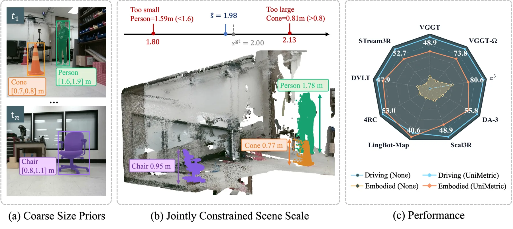
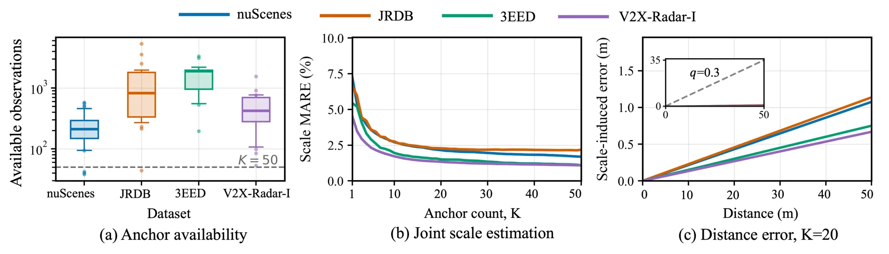
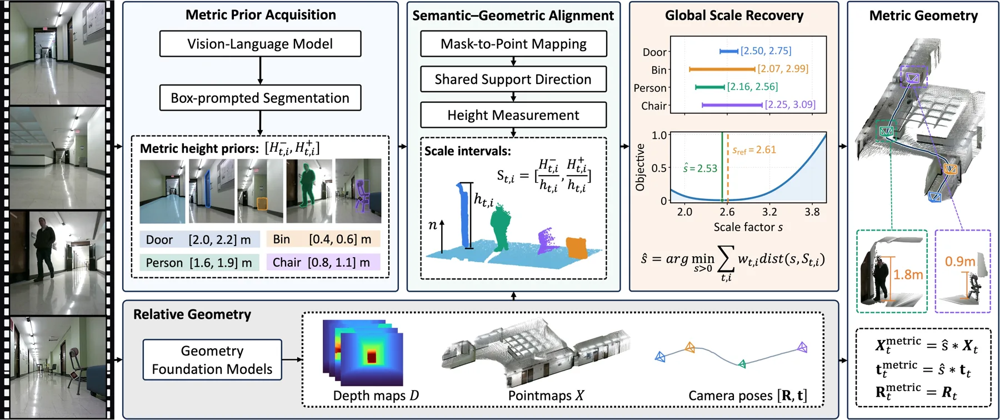
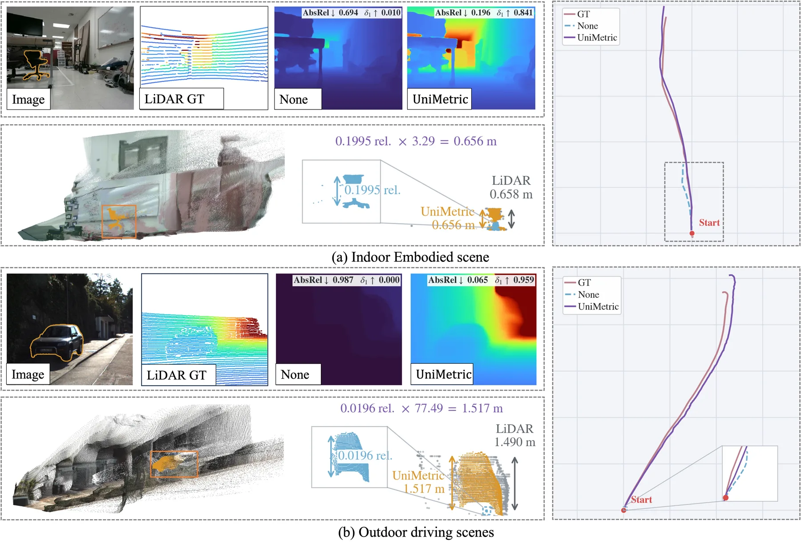
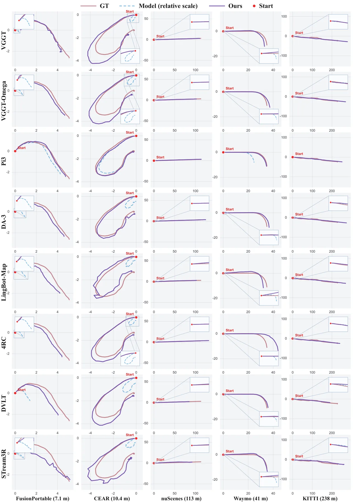
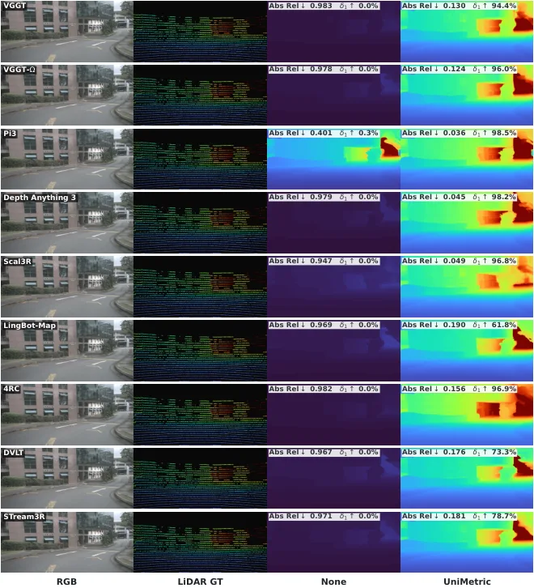

UniMetric：面向视觉几何基础模型的通用公制尺度恢复
UniMetric: Universal Metric Scale Recovery for Visual Geometry Foundation Models
三模块免训练流程：VLM 给物体高度区间与置信 → 用 SAM 2.1 掩码把物体点与支撑面点投到共同重建系、逐帧独立平面拟合得到支撑法向、沿法向量物体重建高度、把先验转成尺度区间 [H⁻/h, H⁺/h] → 用带类别可靠性与先验置信权重的区间距离平方和（凸、分段二次）经黄金分割求单一标量。该标量同时作用于点图与相机平移，旋转、内参与相对几何不变。MetricBench（12 子集）×9 个 GFM 上：深度 Abs Rel 在 108 个模型–子集对全部下降、平均 −54.2%；重建 Chamfer 驾驶套件 17.471→2.528 m（−83.8%）、ATE 38.634→12.119 m（−65.6%）；与 Depth Pro / UniDepth v2 / Depth Anything V2 / ZoeDepth 对比，UniMetric 在两数据集四项指标上均为最佳非 oracle。
mean Abs Rel reduction
driving-suite Chamfer distance
driving-suite ATE mean
VGGT-Ω Abs Rel on nuScenes
作者、单位与技术谱系 · Research context
作者与单位
研究脉络
- VGGT / VGGT-Ω / π³ / Depth Anything 3 等视觉几何基础模型方法基座关系：UniMetric 不修改这些模型的权重，只对其输出做统一尺度校正；论文把 9 个 GFM 作为被标定对象，并用 None vs UniMetric 的成对比较隔离尺度因素。[官方 HTML 全文（第 4.2 节）]
- 单体度量深度估计（Depth Pro / UniDepth v2 / Depth Anything V2 / ZoeDepth）方法上游（对照）关系：这些方法从单目深度直接给公制尺度；论文把它作为「同为序列级单标定」的基线（每序列估一个尺度），从而让差异只来自公制信息来源。[官方 HTML 全文（第 4.4 节、表 7）]
- SAM 2.1 与 VLM 尺寸先验方法上游关系：语义侧直接复用现成的分割与视觉语言模型来产生物体掩码与高度区间，属「拿现成语义能力约束几何尺度」的接续。[官方 HTML 全文（第 4.2 节、附录 C）]
合作网络
- 跨机构共同署名（六家单位）Nanyang Technological University、Carnegie Mellon University、The Hong Kong Polytechnic University、Tongji University、University of Toronto、Tsinghua University → UniMetric 八位作者关系：共同署名 / 跨机构[arXiv 官方 HTML（首页作者与单位）]
- 代码与基准数据发布UniMetric → github.com/yanglei18/UniMetric 与 HuggingFace MetricBench关系：官方代码/数据依赖（可核验）[官方 HTML 全文（摘要与注释）]
- 对 9 个发布权重的依赖UniMetric 标定流程 → VGGT、VGGT-Ω、π³、DA-3、Scal3R、LingBot-Map、4RC、Déjà View、STream3R 的发布权重关系：官方模型依赖（明确技术依赖）[官方 HTML 全文（第 4.2 节）]
作者与单位来自论文首页署名（论文报告的事实）；「基座/上游」定位来自论文正文与对照设置的明确表述（基于来源的解读）；跨机构合作边以首页署名映射为据，未推断导师/师生关系；代码与数据发布状态有官方链接与同日仓库佐证。
方法本质拆解 · What actually changed
是不是微调？——完全不训练，纯测试时闭式/一维凸优化
UniMetric 不做任何训练：9 个几何基础模型用各自发布权重，VLM（Seed1.8）与分割模型（SAM 2.1）也是现成推理，被求解的只是一个序列级正标量 ŝ。求解本身是一维凸优化（分段二次目标 + 黄金分割），没有梯度更新、没有权重变化。因此它既不是预训练也不是微调，而是「测试时标定」——这与论文自称 training-free 一致。
有没有额外约束？——区间型尺度约束 + 支撑面法向 + 类别可靠性权重
新增约束作用在「统一尺度 s」这一个标量上。每个「帧–物体」观测给出一段可采纳区间 S_{t,i}=[H⁻/h, H⁺/h]；目标只在 s 落在区间外时惩罚（dist(s,S)=max{a−s,0,s−b}），因此区间互相重叠时不需要硬性折衷；每个观测带权重 w=q·α_c（先验置信 × 类别可靠性），而支撑面法向由**逐帧独立**平面拟合给出，避免引入「物体都竖直」或「整段共面」的隐式假设。求解后把 ŝ 同时施加到点图、深度与相机平移，旋转、内参、相对几何保持不变。
推理/后端到底做了什么？——一次前向 VLM 查询 + 一维搜索，无新后端
流程是：对选定的「帧–物体」观测调用一次 VLM 得到高度区间与置信、调用分割模型得到物体与支撑面掩码；把两类点投到共同重建系，拟合支撑面法向、量出重建高度、转成区间；收集所有区间后做一次一维黄金分割搜索得到 ŝ；最后对点图、深度与相机平移做统一缩放。没有新的因子图、BA 或迭代优化后端，也无需在推理时反复调用 VLM（观测预算 K 是显式参数）。
方法本质是什么？——把「语义尺寸记忆」转成对同一标量的区间约束
本质是换一个不确定性来源：不靠传感器、也不靠带尺度标注的训练，而是把语言模型对常见物体大小的模糊记忆，转成对重建共享尺度的一系列区间约束，再用凸目标把这些区间拧成一个标量。它改变的是重建的**尺度自由度**（1 个标量），而不是结构、位姿或模型权重；明确没有做的是：没有训练任何网络、没有改相机内外参、也没有为不同任务分别拟合尺度（同一个 ŝ 用于深度、重建与轨迹）。
输入/先验 = RGB 序列 + 冻结的几何基础模型输出（点图/深度/位姿）+ VLM 给出的物体高度区间 + 分割掩码；改变的位置 = 序列级公制尺度这一个标量（同时作用于点图、深度与相机平移）；约束或合并动作 = 逐帧平面拟合的支撑面法向 + 区间型尺度约束 + 先验置信与类别可靠性加权 + 一维凸（黄金分割）求解；直接效果 = MetricBench 深度 Abs Rel 平均 −54.2%、驾驶套件重建 Chamfer −83.8%、ATE −65.6%，且不改相对几何。

动机与问题Motivation
动机与问题
用互联网视频做具身预训练需要可靠的物理尺度标注，但几何基础模型通常只能给出「相对几何」：点图与相机平移共用一个未知单位。已有的补尺度路线要么额外加传感器（LiDAR/IMU），要么用任务特定的公制监督微调，前者限制数据来源、后者破坏「通用」这一前提。论文因此把问题收窄为：能否只用 RGB 里熟悉的物体（人、车等已知大小类别）＋一个语言模型的粗略尺寸记忆，来恢复整段重建的公制尺度；并且要求得到的尺度能同时作用在深度、重建点与相机平移上，从而不改动模型也不改相对几何。
方法Method
方法总览
流程分三块。Metric Prior Acquisition：VLM 对标注了目标物体的图像给出高度区间与置信度，并用分割模型（SAM 2.1）给出物体与支撑面掩码。Semantic-Geometric Alignment：把物体点与支撑面点按预测位姿投到共同重建坐标系，对支撑面点做平面拟合得到法向 n_t，再沿 n_t 量物体点的上下极值差作为重建高度 h_{t,i}，于是每个「帧–物体」观测给出一个尺度区间 S_{t,i}=[H⁻/h, H⁺/h]。Global Scale Recovery：给每个观测权重 w=q·α_c（先验置信 × 类别可靠性），最小化区间距离平方的加权和 J(s)=Σ w·dist(s,S)²，该目标凸且分段二次，用黄金分割在区间凸包上求唯一解，最后把 ŝ 一致施加到点图与相机平移。
关键技术细节
几个设计决定了它为什么「不用训练也能用」。其一，支撑方向由每帧独立平面拟合给出，因此不假设相机某轴竖直，也不强制整段序列共用一个支撑面；高度测量的两个端点都来自物体自身点集，支撑面只提供方向，因此物体必须覆盖其竖直跨度（这一点也是失效条件）。其二，区间目标只在候选尺度落在区间之外时才施加惩罚：dist(s,S)=max{a−s, 0, s−b}，因此当所有区间有公共交点时最小值正好落在交点内，没有交点时才给出唯一折中——这比直接用区间中点（点先验）更能容忍粗粒度 VLM 先验。其三，权重把「先验置信」与「类别可靠性 α_c」分开，消融显示去掉权重（等权）会明显掉点。其四，公式上「所有区间塌缩为点且等权」时退化为均值估计，论文还在附录给出了均值估计的均方一致性命题。

实验Experiments
实验设置
评测基准：MetricBench 共 12 个子集，含驾驶/基础设施（KITTI、nuScenes、Waymo、Argoverse、V2X-Radar-I、DAIR-V2X-I）与具身（CEAR、JRDB、FusionPortable、DROID-Humanoid-Everyday、3EED 等）两类，并提供传感器导出的真值尺度。模型：9 个几何基础模型使用各自发布权重、不做额外训练（VGGT、VGGT-Ω、π³、Depth Anything 3、Scal3R、LingBot-Map、4RC、Déjà View、STream3R）；VLM 用 Seed1.8、分割用 SAM 2.1，对所有 GFM 共享。指标与聚合：深度用 Abs Rel 与 δ₁，重建用 Chamfer 距离（米），轨迹用刚性对齐后尺度固定为 1 的 ATE Mean；套件汇总对各子集等权。受控研究另用 nuScenes/JRDB/3EED/V2X-Radar-I 的 193 段序列，K∈{1,10,20,50} 帧–物体观测预算，报告 MARE（%）与序列 bootstrap 95% 置信区间。
实验数字与比较
深度（来源：论文表 3 与正文）：UniMetric 让 108 个模型–子集对的 Abs Rel 全部下降，均值 −54.2%；驾驶套件均值 0.892→0.338、具身套件 0.671→0.379。典型对：VGGT-Ω 在 nuScenes 从 0.979 降到 0.152；而 π³ 在 KITTI 仅从 0.190 到 0.188（原始尺度本就不差）。重建与轨迹（来源：论文表 4/5）：同一尺度让每个 GFM 在三个任务上都改善；驾驶套件 CD 由 17.471 降到 2.528 m、ATE 由 38.634 降到 12.119 m（分别 −14.943 m 与 −26.515 m）；VGGT-Ω 在 FusionPortable 的 CD 从 15.848 降到 0.653 m，在 nuScenes 从 14.594 降到 0.726 m。唯一的反例是 π³ 在 DROID 的 CD 由 0.090 升到 0.097 m。与公制深度法对比（来源：论文表 7，nuScenes/FusionPortable）：UniMetric 的 Abs Rel 0.152/0.331、δ₁ 82.0/52.2、CD 0.726/0.653 m、ATE 2.476/4.238 m，在四项指标上均为最佳非 oracle——对照 Depth Pro（0.212/0.543）、UniDepth v2（0.278/0.485）、Depth Anything V2（0.347/0.396）、ZoeDepth-NK（0.218/0.432）。受控研究（来源：论文表 1）：预算 K 从 1 提到 50，MARE 由 4.526–7.245% 降到 1.086–2.175%，相对降幅 67.2–79.8%（nuScenes 7.245→1.691、JRDB 6.627→2.175、3EED 5.435→1.097、V2X-Radar-I 4.526→1.086）。定性（来源：论文图 4）：VGGT-Ω 上恢复的尺度因子为 CEAR 3.29、KITTI 77.49，使椅子量得 0.656 m（LiDAR 真值 0.658 m）、车宽 1.517 m（真值 1.490 m），Abs Rel 由 0.694→0.196（CEAR）与 0.987→0.065（KITTI）。
消融/失败边界
设计消融（来源：论文表 8，VGGT-Ω）：完整方法在 nuScenes/FusionPortable 的 δ₁ 为 82.0/52.2；把区间换成中点（Point priors）降到 79.1/47.4；改成等权重（Uniform weights）降到 67.5/46.9；只保留最低权重的那一个观测（Single anchor）崩到 45.4/18.0——说明组合多个先验、而不是押注单锚点，是方法成立的前提，也揭示了对「单个坏参考」的敏感性。失败边界有三处：其一，模型原始尺度已经较准时收益很小甚至无效（π³ KITTI 0.190→0.188）；其二，改善深度不保证改善每个几何指标——π³ 在 DROID 的 CD 反而从 0.090 升到 0.097 m，是 108 对中唯一的重建退步（论文表 5）；其三，方法依赖「物体在重建中覆盖其竖直跨度」与「支撑面可被拟合成平面」两个假设，遮挡、倾斜支撑面或物体贴地被遮挡时会失效（论文在 3.1 节明确把端点来源限定为物体自身点）。
局限与迁移Limitations & Transfer
局限与待核验
作者在正文中承认的限制主要是任务边界而非失败：方法不引入新传感器、不做公制监督，因此上限由 VLM 尺寸先验的质量决定；Oracle 行（用真值尺度分别拟合每个指标）显示「全球再缩放」仍有空间。我们的待核验项：(a) 论文提到 GPT-6 Astra 等超大规模多模态模型作为动机，但实际用的是 Seed1.8；换用其他 VLM 时的高度区间质量与最终精度未在正文给出交叉对比；(b) 类别可靠性权重 α_c 的取值来源与标定过程在正文中未逐类列出（附录 C.2 给出设置，但未给出各数据集上的敏感性）；(c) 受控研究使用「精确相对高度」(h=qH, q=0.3) 来隔离语义先验不确定性，与真实 GFM 重建中的高度测量误差叠加后的行为需要分项消融才能确认；(d) 附录 E 给出了逐子集 δ₁ 与米制深度误差，正文表格以套件汇总为主，个别子集的极端值需回查附录。
与你研究路线的关系
可迁移点有三。第一，「用语义尺寸先验约束一个共享标量」本质上是一个外部可靠性先验：它不假设每个观测都对，但要求它们约束同一个量——这与你在多源融合里「多个低置信度观测共同约束一个公共状态」的思路同构，且带类别可靠性权重的做法可直接借用。第二，区间目标只在越界时惩罚（dist(s,S)=max{a−s,0,s−b}），是把「不确定先验」写成软约束而非硬赋值的干净做法；在你处理 GNSS 高度/尺度这类只在某些条件下可信的量时，可以照此写成区间型因子而不是等式因子。第三，方法把尺度一次性施加到点图、深度与相机平移上并保持旋转/内参不变，等于给出了一个「单参数、可整体撤销」的修正接口，便于做 A/B：无尺度 / 估计尺度 / 真值尺度三方对照。下一步实验建议：(a) 在你已有真值尺度的序列上做上述三方对照，量测点选下游位姿与建图误差；(b) 用「只保留最低权重单锚点」作为负对照，检验你现有流程是否也过度依赖单个尺度来源；(c) 把图像质量/可见性作为第二重权重加进区间目标，观察是否能进一步压低 MARE。







